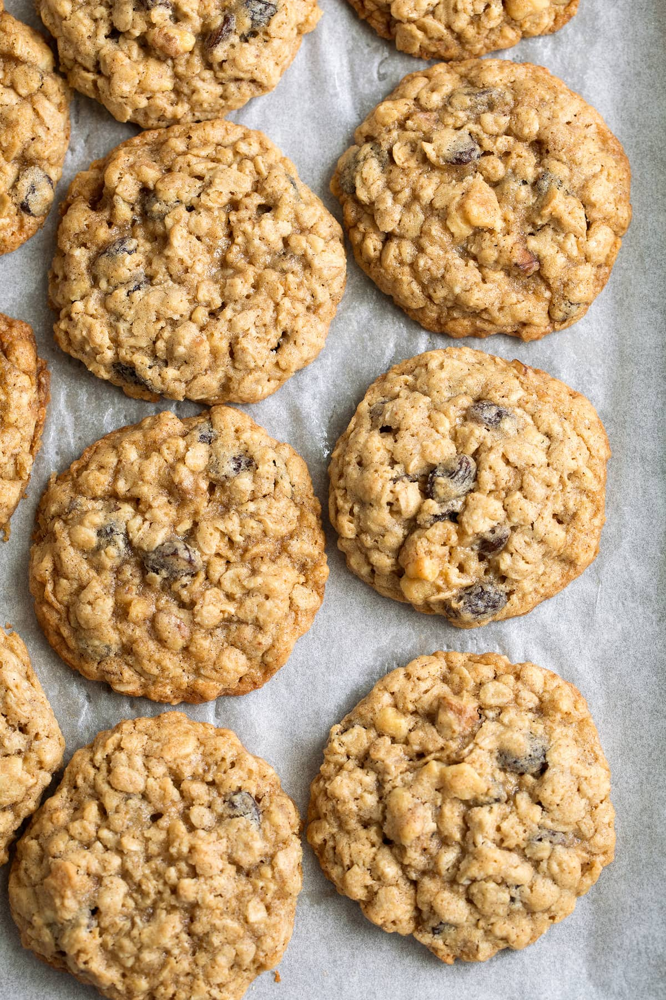

Oatmeal Cookie Recipe

THE BEST OATMEAL COOKIE RECIPE EVER
There’s nothing quite like a batch of homemade Oatmeal Cookies, just like Grandma made! This is my favorite oatmeal cookie recipe!
They’re soft and chewy, perfectly spiced, dotted with juicy raisins and crunchy walnuts and always sure to satisfy those cookie cravings.
You’ll love all the textures in these oatmeal cookies and their rich buttery flavor. They’re just one of those classic cookies everyone will love and you’ll want to make time and time again.
And of course the ultimate way to enjoy these cookies is fresh, warm from the oven with a tall glass of ice cold, creamy whole milk.
There’s just something so nostalgic about these (oatmeal cookies just like Grandma’s!), and it’s a tradition that should be passed down for generations to come.
These are likely to become a new favorite cookie!
Ingredients
- Old Fashioned Oats
- All-purpose flour
- Baking powder and baking soda
- Cinnamon
- Salt
- Unsalted Butter
- Light Brown Sugar
- Eggs
- Vanilla
- Raisins
- Walnuts
Baking Directions
- Heat oven, prepare baking sheet: Preheat oven to 350 degrees. Line rimmed 18 by 13-inch baking sheets with parchment paper or silicone baking mats.
- Whisk dry ingredients: In a mixing bowl whisk together flour, cinnamon, baking soda, baking powder and salt, set aside.
- Cream butter and sugars using electric mixer: In the bowl of an electric stand mixer fitted with the paddle attachment cream together butter, brown sugar, and granulated sugar until combined.
- Blend in eggs one at a time and vanilla: Add in one egg mix. Add in second egg and vanilla and mix.
- Mix in dry ingredients: Add flour mixture to butter sugar mixture and mix just until combined.
- dd mix ins: Mix in oats, raisins and walnuts, mixing just until evenly distributed.
- Shape oatmeal cookie dough into individual rounds: Scoop dough out and shape into 1 1/2-inch balls (or 40 grams each), transfer to prepared baking sheet fitting 12 per sheet and spacing 2-inches apart.
- Bake: Bake in preheated oven until golden brown on edges and nearly set (center should look under-baked), about 12 – 14 minutes.
- Cool: Let cool on baking sheet for a few minutes then transfer to a wire rack to cool completely. Repeat with remaining dough.